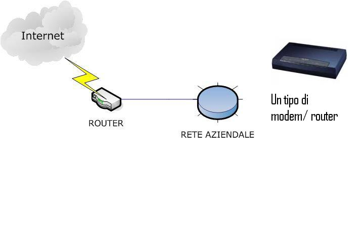

In pratica il modem , associato ad un terminale di rete ovvero un PC , attua tutte quelle procedure di conversione e codifica del segnale elettrico informativo da analogico a digitale in entrata al PC e da digitale ad analogico in uscita dal PC lungo il doppino telefonico, verso altre destinazioni della rete